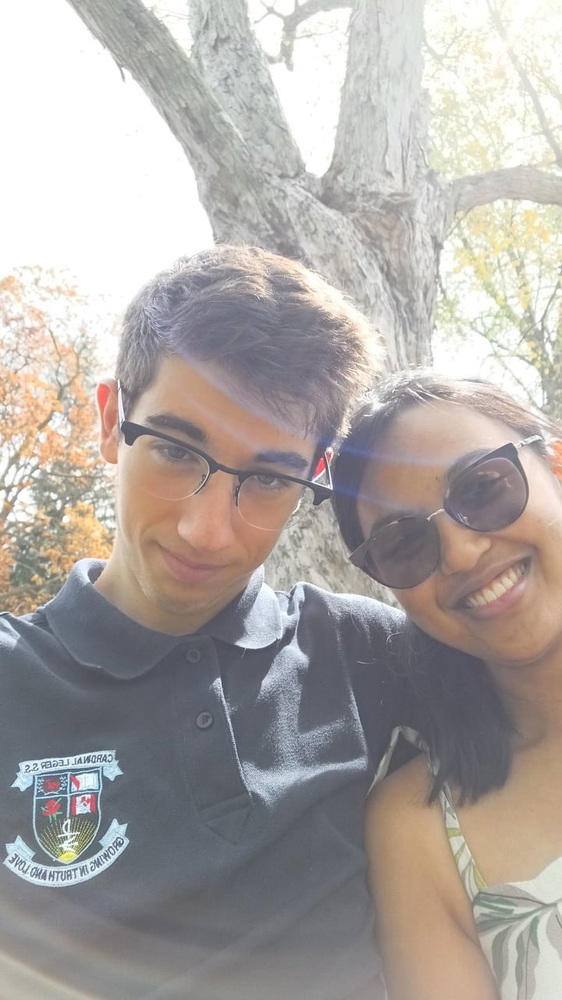

The Park

This bench at the park was the venue for some afternoons I certainly will never forget. The warm sun, the wondeful scenery, nature all around. It all felt so comforting, only it became so much more comforting with you by my side. No matter what happened in school that day, coming to this bench with you made it one of the best days I can remember. Spending time with you is my favourite activity. This park helped me realize that even more. The peonies in the background, they reminded me of the ones I had given you. I loved those flowers. I think they were the perfect choice. They do remind me of you in a way, you know. The prettiest and best smelling flowers I've ever known.
